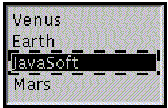

java.lang.Object
|
+----java.awt.Component
|
+----java.awt.List
public class List
extends Component
implements ItemSelectable
The List component presents the user with a scrolling list of text items. The list can be set up so that the user can choose either one item or multiple items.
For example, the code . . .
List lst = new List(4, false);
lst.add("Mercury");
lst.add("Venus");
lst.add("Earth");
lst.add("JavaSoft");
lst.add("Mars");
lst.add("Jupiter");
lst.add("Saturn");
lst.add("Uranus");
lst.add("Neptune");
lst.add("Pluto");
cnt.add(lst);
where cnt is a container, produces the following scrolling list:

Clicking on an item that isn't selected selects it. Clicking on an item that is already selected deselects it. In the preceding example, only one item from the scrolling list can be selected at a time, since the second argument when creating the new scrolling list is false. Selecting an item causes any other selected item to be automatically deselected.
Beginning with Java 1.1, the Abstract Window Toolkit sends the List object all mouse, keyboard, and focus events that occur over it. (The old AWT event model is being maintained only for backwards compatibility, and its use is discouraged.)
When an item is selected or deselected, AWT sends an instance of ItemEvent to the list. When the user double-clicks on an item in a scrolling list, AWT sends an instance of ActionEvent to the list following the item event. AWT also generates an action event when the user presses the return key while an item in the list is selected.
If an application wants to perform some action based on an item in this list being selected or activated, it should implement ItemListener or ActionListener as appropriate and register the new listener to receive events from this list.
For multiple-selection scrolling lists, it is considered a better user interface to use an external gesture (such as clicking on a button) to trigger the action.